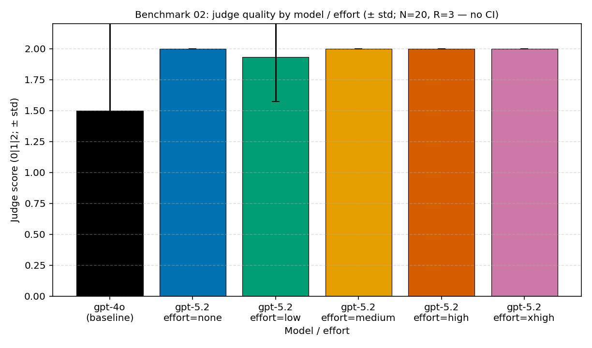

प्रयोग retrospective · तीन task shapes के पार · lens: task-shape
क्या reasoning effort अपना मूल्य चुकाता है — परिकल्पना, और माप ने जिसे गलत साबित किया
लेखक Hyeonsang Jeon · Global Black Belt, Cloud & AI Apps
हमने यह prediction pre-register किया था: multi-step reasoning में ऊँचा reasoning effort (reasoning_effort) अपना मूल्य चुकाएगा। तीन benchmarks में 1,080 cells मापने पर उस prediction का खंडन हुआ। Short-factual हो, multi-step हो, या tool agent — उत्तर कभी भी high या xhigh नहीं था। effort को मध्य से ऊपर उठाने पर quality सपाट रही, जबकि cost बढ़ी और throughput घटा। यह retrospective “हमने क्या अपेक्षा की, क्या टूटा, और इसलिए किसे default चुना” को समयक्रम (timeline) और प्रश्नक्रम (प्रति-प्रश्न retrospective) दोनों से, केवल निष्कर्ष नहीं बल्कि हमने जो रास्ता चला उसे भी, शांत ढंग से फिर से देखता है — और आप इसे पन्ने के अंत में नहीं, अभी, एक command से स्वयं reproduce कर सकते हैं।
पहले: 10 सेकंड में reproduce
निष्कर्ष पर भरोसा न करें — इसे खुद चलाएँ
Cloud account या credentials की ज़रूरत नहीं। नीचे का text जस का तस paste करें; experiment catalog · pure functions · runner dry-run सब हरे हो जाएँगे (लगभग 10 seconds)।
git clone https://github.com/hyeonsangjeon/when-reasoning-pays-off.git
cd when-reasoning-pays-off
# Python 3.11+ अनुशंसित. यदि 'python' नहीं है, तो नीचे 'python3' उपयोग करें.
python3 -m venv .venv && . .venv/bin/activate
pip install -r requirements.txt
# credentials के बिना setup सिद्ध करने वाली एक पंक्ति:
bash scripts/verify_setup.sh
# पूरा experiment catalog (inputs -> variables -> outputs) जस का तस print करें:
python experiments/examples/describe_all.pyहर experiment की input files · variables · exact output paths repo के experiments/README.md में per-experiment cards में एक-एक करके लिखी हैं।
results/summary.md §3 · §7 से लिए गए हैं, और हर benchmark के
analysis.md को फिर से cite करते हैं।

प्रश्न
किसी नए production task में, reasoning effort बढ़ाना क्या अपना मूल्य चुकाता है? और PAYG (प्रति dollar सही उत्तर) व PTU (fixed capacity पर प्रति minute सही उत्तर) दोनों lenses में?
साक्ष्य
तीन benchmarks — 01 short-factual (Null) · 02 multi-step (Ceiling) · 03 tool agent (Mixed) — प्रत्येक N=20 samples × R=3 repeats, effort {none, low, medium, high, xhigh} और gpt-4o baseline के साथ मापा गया। कुल 1,080 cells। सभी costs per 1,000 normalized हैं और हर benchmark के analysis.md को re-cite करते हैं।
फ़ैसला
सबसे अच्छा (model, effort) task shape और consumption model पर निर्भर करता है, पर साझा निष्कर्ष एक है: उत्तर कभी भी high या xhigh नहीं है। मध्य से आगे cost बढ़ती है और throughput कटता है, quality gain के बिना।
Timeline
हम जिस क्रम से चले
Experiment एक ही बार में हल नहीं हुआ। नीचे की पाँच scenes को तारीख़ के क्रम में पढ़ें; prediction कहाँ गलत हुआ और default कहाँ बदला, यह क्रम से दिखता है।
- May 2026 से पहले — pre-registration. Measurement शुरू करने से पहले हमने prediction लिख दिया था: multi-step tasks में higher reasoning effort quality को इतना उठाएगा कि cost justify हो। ताकि बाद में results के हिसाब से कहानी न मोड़ सकें, हमने gpt-5.2 का effort
noneसेxhighतक पाँच steps में fix किया और साथ में gpt-4o baseline रखा। इसी pre-registration की वजह से आगे आने वाला ‘refutation’ वजन रखता है। - May 2026 — short-factual case (01), floor को छूना. पहले हमने बिना reasoning की ज़रूरत वाले short-factual task से cost surface का floor जाँचा — तीन benchmarks में केवल इसी floor को real data से फिर मापा गया (सभी 360 cells real Azure calls, कोई fixture markers नहीं)। gpt-5.2 बिना कोई reasoning चालू किए
noneपर ही 95% accuracy में saturated था — बल्कि gpt-4o (90%) से ऊपर। प्रति 1,000 सही answers cost $0.62 थी, gpt-4o ($0.74) से 16% सस्ती (और प्रति 1,000 requests 12% सस्ती)। इसलिए short-factual PAYG default gpt-5.2noneबना — हालांकि fixed-capacity (PTU) lens में दोनों models का throughput लगभग 1% के भीतर overlap हुआ, यानी व्यवहार में tie। यह experiment exp001 experiment note में टुकड़ा-टुकड़ा खोलते हैं। - May 2026 — multi-step case (02), turning point. अब reasoning को जीतना था। लेकिन खोलकर देखा तो gpt-5.2 ने बिना कोई reasoning चालू किए default state (
none) में all twenty questions सही कर दिए। prior hypothesis वहीं ढह गई। प्रति 1,000 सही answers cost gpt-4o के $1.06 से $0.62 पर आ गई (42% down) और PTU correct-per-minute 32.5% बढ़ा, जबकि effort बढ़ाने से quality हिली भी नहीं। इसलिए हमने multi-step default gpt-5.2noneरखा और effort increase को छोड़ दिया। निर्णायक चीज़ ‘effort dial’ नहीं, ‘model swap’ थी। यह experiment exp002 experiment note में टुकड़ा-टुकड़ा खोलते हैं। - May 2026 — tool agent case (03), surprise. अंत में tool-using agent आया (no-tool, one-tool, multi-tool का मिश्रण)। यहाँ जिसने चौंकाया, वह gpt-4o था। ‘general knowledge से उत्तर दो’ prompt पर भी वह आदत से calculator बुला बैठा, जिससे no-tool pass rate 83.3% तक गिरा। gpt-5.2 ने meanwhile सिर्फ़
lowपर multi-tool 100% पकड़े रखा और प्रति 1,000 सही answers $2.77 तक पहुँचा (gpt-4o के $3.65 से 24% सस्ता)। इसलिए tool default gpt-5.2lowहै। परlowसे ऊपर जाते ही throughput medium पर 8.5% और xhigh पर 10.8% कट गया, gain वापस ले गया। यह experiment exp003 experiment note में टुकड़ा-टुकड़ा खोलते हैं। - July 2026 — evidence और reproduction के बीच gap भरना. Measurement के बाद बचा homework अलग किस्म का था। Feedback आया कि ‘deploy करने में interest ऊँचा है, पर README और validation layer उस interest को पूरी तरह पकड़ नहीं पाते।’ व्यवहार में नए visitors editable-install failure (PEP 660) या टूटे run command पर रुक रहे थे। इसलिए हमने credential-free one-line validation (
verify_setup.sh), per-experiment guide cards, और splitrequirements.txtजोड़ा, ताकि ‘evidence’ और ‘reproduction’ के बीच gap बंद हो। इस page के ऊपर का 10-second reproduce उसी का परिणाम है।
प्रति-प्रश्न retrospective
हमने क्यों चलाया, और क्या सीखा
वही results, इस बार question से शुरू करते हुए। हम पहले ‘हमें क्या जानना था’ रखते हैं, फिर तीन questions का एक-एक करके उत्तर देते हैं।
Q1 — क्या short-factual task को reasoning चाहिए?
सबसे सरल question से शुरू करें। एक shot में उत्तर मिल जाने वाले short factual task (extraction · formatting · classification · transliteration · arithmetic) के लिए reasoning effort चालू करने की कोई वजह नहीं दिखती थी। तीन benchmarks में से इसी floor को हमने real data के रूप में फिर मापा — सभी 360 cells real Azure Foundry calls, कोई fixture markers नहीं, judge scoring 360/360।
Prediction बिना reversal के सही निकला। gpt-5.2 बिना reasoning चालू किए none पर 95% accuracy में saturated था — बल्कि gpt-4o (90%) से ऊपर। प्रति 1,000 correct answers $0.62 पर वह gpt-4o ($0.74) से 16% सस्ता था (और per request 12% सस्ता)। Effort को xhigh तक बढ़ाने पर भी hidden reasoning tokens zero के पास रहे, इसलिए न quality हिली न cost — effort dial किसी चीज़ से जुड़ा ही नहीं था। इसलिए short-factual default gpt-5.2 none है। विस्तृत dissection exp001 experiment note में है।
Q2 — multi-step पर effort बढ़ाना क्या अपना मूल्य चुकाता है?
Hypothesis सरल था। जिस problem को कई stages से गुजरना हो, वहाँ high या xhigh की quality lift cost increase को justify करेगी। इसे जाँचने के लिए हमने gpt-5.2 के पाँच efforts (none से xhigh तक) को gpt-4o baseline के साथ रखा, twenty questions को तीन-तीन बार repeat किया।
Result ने hypothesis उलट दिया। gpt-5.2 ने none पर ही 100% सही किया, प्रति 1,000 correct answers $0.62 पर gpt-4o ($1.06) से 42% सस्ता था, और PTU correct-per-minute 32.5% अधिक था। Unexpected यह भी था कि gpt-4o ने हमारी सोच से बेहतर किया — पहले से लिखे 30–60% से आगे जाकर 75% दर्ज किया। छोटे sample (N=20, no confidence intervals) में savings के आकार को सावधानी से पढ़ना चाहिए, पर दिशा साफ़ थी। इसलिए multi-step default gpt-5.2 none है, और high·xhigh अपनाए नहीं गए।
Q3 — क्या tool agent के लिए अधिक reasoning हमेशा सुरक्षित है?
Plan जितने अधिक tools chain करे, उतनी अधिक reasoning reliability बढ़ाएगी, ऐसा लगा। इसलिए no-tool, one-tool, और multi-tool मिले हुए twenty tasks में हमने फिर gpt-5.2 के efforts को gpt-4o से भिड़ाया।
विभाजन reasoning की मात्रा नहीं, tools को बुलाने की आदत निकली। gpt-4o no-tool ‘general knowledge से answer दो’ prompt पर भी calculator तक गया और 83.3% तक गिरा, जबकि gpt-5.2 ने no-tool पर भी 100% पकड़े रखा। Cost में भी gpt-5.2 low प्रति 1,000 correct answers $2.77 (gpt-4o के $3.65 से 24% सस्ता), multi-tool 100%, PTU +4.3% के साथ आगे रहा। एक caveat: यहाँ web_search real web call नहीं, mocked fixed knowledge-base lookup है। निष्कर्ष फिर वही था — छोटा reasoning surface पर्याप्त है, tool default gpt-5.2 low है, और उससे आगे tokens waste हैं।
Experiment details तक
Loop का दूसरा सिरा — numbers कहाँ से आए
Retrospective हमेशा experiment details तक लौटता है। हर story की input files · N/R/seed · exact output paths per-experiment notes और repo के guide cards में एक-एक कर लिखी हैं, और हर card में cost-free dry-run line है। Multi-step case (Q2) को credentials के बिना जाँचना हो, उदाहरण के लिए:
# केवल YAML पढ़कर inputs -> variables -> outputs print करें (network नहीं)
python -c "import experiments; print(experiments.describe('exp002_benchmark02_gpt5_2.yaml').summary())"
# dry-run से runner wiring verify करें (zero tokens consumed)
python -c "import experiments; print(experiments.run('exp002_benchmark02_gpt5_2.yaml', dry_run=True, extra_args=['--max-samples','1']).ok)"गहरे dissections exp001 experiment note (short-factual)·exp002 experiment note (multi-step)·exp003 experiment note (tool agent) में हैं, और पूरा experiment catalog (किस intent से, क्या inputs, क्या outputs) experiments/README.md में है।
Field rule
Reasoning effort इसलिए न बढ़ाएँ कि वह “अधिक स्मार्ट दिखता है।” Cost · quality · latency · token composition को साथ पढ़ें, और अधिक tokens केवल वहाँ खर्च करें जहाँ effort सचमुच अपना मूल्य चुकाता है। मापे गए तीन task shapes में high और xhigh कभी default नहीं थे।
Next
अगला call · अगला experiment
अगला call. यह निष्कर्ष केवल “मापे गए task shapes” के भीतर लागू है। Chain लंबी हो या real tools आएँ, curve फिर हिल सकती है; इसलिए rule है कि workload shape बदलते ही फिर मापें।
अगला experiment. यहाँ PTU figures token-based estimates हैं (live load नहीं)। अगला experiment real PTU deployment पर load test है — rate-limit shaping · queuing · parallel batching throughput पर कैसे असर करते हैं।
अगला: 429 error नहीं, recovery signal है — जब PTU capacity कहे “अभी नहीं,” तो client अपना अगला कदम कैसे तय करे?
इसे खुद reproduce करें और ⭐ छोड़ें — when-reasoning-pays-off
स्रोत · evidence boundary
स्रोत & evidence boundary
यह retrospective कोई नया measurement नहीं जोड़ता; यह published figures को per 1,000 normalized रूप में re-cite करता है। Raw materials और boundaries ये हैं।
- Cross-summary:
results/summary.md(§3 headline, §5 decision boundary, §6 limits). सभी costs हर benchmark केbenchmarks/0[123]-*/analysis.mdसे re-cite हैं। - Pricing: single snapshot
pricing/azure-openai-payg-2026-05.yaml(Azure, accessed 2026-05-19). Rates बदलें तो snapshot update करें और analysis फिर चलाएँ। - Sample: N=20 · R=3 per benchmark. Methodology §8 इस sample size पर confidence intervals / standard errors report करने से रोकती है — directional conclusions robust हैं, पर absolute sizes को small-sample caution से पढ़ें।
- Scoring: LLM-as-judge rubric neutral judge के रूप में gpt-4o इस्तेमाल करता है। Drift देखने के लिए judge-prompt SHA-256 हर scoring JSON में recorded है।
- PTU: throughput figures token-count estimates हैं, live PTU load test नहीं। Tool benchmark का
web_searchfixed-KB lookup (mocked) है।